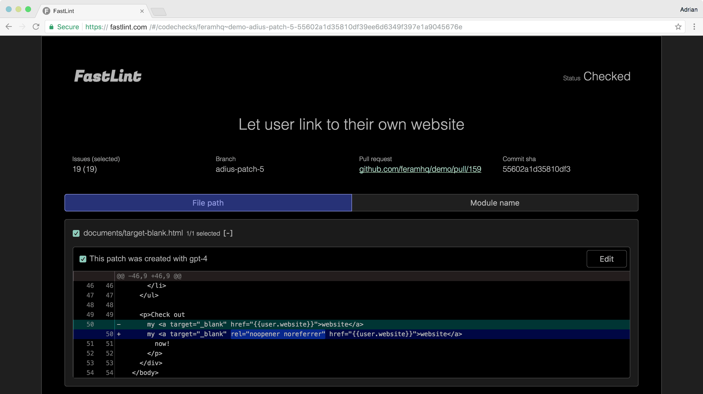

FastLint
A polyglot linter that bundles best-in-class open-source checkers — making vibe coding safer and faster.
One command, every file, every language.
Rather than reimplementing analyses, FastLint stitches together
proven checkers from crates.io behind a single CLI
that respects .gitignore and skips binaries automatically.
Install
cargo install fastlintRun
fastlint # check current directory
fastlint source/frontend # check a path
fastlint --json # JSON diagnostics
Bundled checks
typos
warning
Source-code spell-checking powered by the
typos
crate.
merge-conflict
error
Catches unresolved
<<<<<<< /
======= /
>>>>>>>
markers before they ship.
trailing-whitespace
warning
Flags trailing spaces and tabs at the end of any line.
More checkers are being added — see the GitHub repository for the current roster.